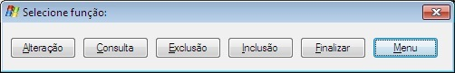
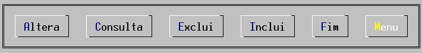

Seletor de opções de funções de manutenção de cadastro.
Campo de retorno da função selecionada pelo usuário. Se já estiver preenchida com uma função válida o comando não terá efeito.
Somente serão exibidas as opções para seleção de funções autorizadas para o usuário de acordo com o que estiver estabelecido no grupo associado.
|
Codificação COBOL |
|
EXEC COBOLware
Option |
|
Efeito no modo gráfico |
|
 |
|
Efeito no modo texto |
|
 |